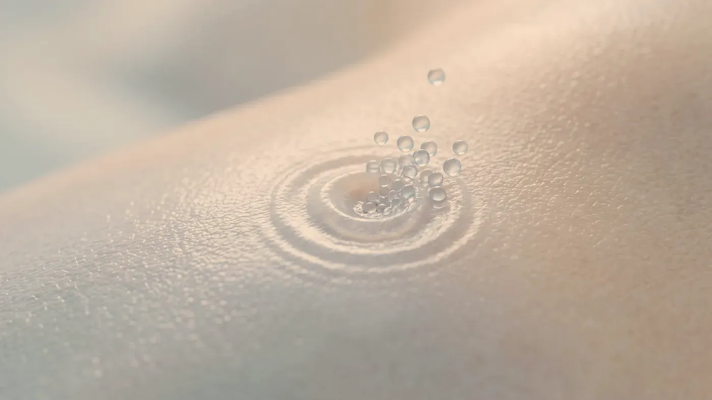
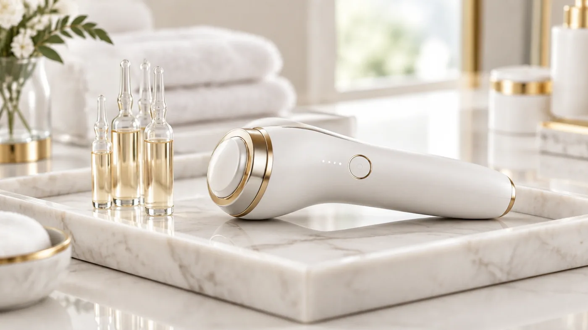

Cihaz Destekli Uygulamalar · Cilt Bakımı
İğnesiz mezoterapi: iğne yerine elektrik darbeleriyle iletim.
Cildin en dış katmanı, sürülen ürünlerin büyük kısmını içeri almayan bir kalkan gibidir. Elektroporasyonda çok kısa elektrik darbeleri bu kalkanda geçici aralıklar açar ve cilde sürülen solüsyon bu aralıklardan ilerler. Deri delinmez; buna karşılık ulaşılan derinlik ve içeri geçen miktar iğneli mezoterapiden azdır.

Temsilî görsel · yapay zekâ ile üretildiNe yapar, ne yapmaz
Elektroporasyon cilde ne yapar, hangi yöntemin yerine geçmez?
Kuru, donuk ya da yorgun görünen bir cildin arkasında bariyer bozukluğundan yanlış ürün kullanımına kadar farklı nedenler olabilir. İğnesiz mezoterapi bu nedenler ayrıştırıldıktan sonra, bir bakım planının parçası olarak konuşulur. Şikâyet başlıklarının tamamı cilt sorunları bölümünde yer alıyor.
Cilde temas eden başlık milisaniyeler süren, düşük şiddetli elektrik darbeleri gönderir. Bu darbeler derinin en dış katmanındaki yağlı yapıların arasında kısa ömürlü geçiş aralıkları açar; tıptaki adı elektroporasyondur. Bu sırada deriye iğne girmez, kesi ya da delik oluşmaz.
Açılan aralıklar uzun ömürlü değildir; kısa süre sonra deri onları kendisi kapatır ve solüsyonun içeri yol bulabildiği zaman dilimi bu kadardır. İçeri ne kadar ürün geçeceği molekülün boyutuna ve elektrik yüküne, bir de o gün derinin ne kadar sağlıklı olduğuna bağlıdır.
Bu yüzden solüsyon rastgele seçilmez. Tercih edilenler, düşük ağırlıklı hyalüronik asit ya da peptit gibi küçük moleküllü, steril ve bu kullanım için hazırlanmış içeriklerdir; evdeki serum şişeleri bu iş için tasarlanmamıştır.
Kullanılan cihaz: elektroporasyon cihazı (Mes Button).
İğneli mezoterapide ürünün hangi derinliğe, ne kadar bırakıldığını hekim belirler ve dosyaya yazar. Elektroporasyonda ise solüsyonun hangi katmana kadar ilerlediğini seçmek ya da içeri geçen miktarı ölçmek mümkün değildir. Bu nedenle iğnesiz yöntem iğneli mezoterapinin yerine konmaz.
İri moleküller bu yolla neredeyse hiç geçmez. Sık karıştırılan bir nokta da şudur: “gençlik aşısı” adıyla bilinen işlem, hyalüronik asidin iğneyle cilt içine verildiği skinbooster uygulamasıdır; bu yöntemle ilgisi yoktur.
Morluk ya da ürünün damara kaçması gibi iğneye özgü sorunlar burada görülmez. Bu, yöntemin tamamen zararsız olduğu anlamına gelmez: akım kızarıklık ve karıncalanma, solüsyon ise tahriş ya da aşırı duyarlılık tepkisi yapabilir. Etkisi yüzeyde kalır ve birkaç hafta içinde azalır; cilt kalitesinde daha kalıcı bir değişim hedefleniyorsa iğneli seçenekler öne çıkar.
Plan nasıl kurulur
Kür nasıl planlanır, kimler için uygun değildir?
İğne fikri sizi rahatsız ediyorsa, kolay morarıyorsanız ya da cildiniz birçok üründe kızarıyorsa bu yöntem gündeme gelebilir.
Kür
Tek seanslık bir etki beklenmez; seanslar birkaç hafta boyunca kısa aralıklarla tekrarlanır. Cildinizin tepkisine göre kür ara kontrollerde kısaltılır ya da uzatılır.
Çubuk boyları yalnız karşılaştırma içindir; size özel plan muayenede kurulur.
- Hedefin konuşulması: bu yöntem beklentinizi karşılayabilir mi?
- Elektronik implant, nöbet öyküsü, gebelik ve ilaçların sorulması
- Onam formunun birlikte okunup imzalanması
- Makyajın temizlenmesi, solüsyonun sürülmesi ve başlıkla eşit geçişler
- Cildin tepkisinin kaydı ve takip planı
Vücudunuzda kalp pili, şok cihazı, insülin pompası ya da sinir uyarıcı gibi elektronik bir cihaz varsa elektrik akımı kullanılan hiçbir uygulama yapılmaz. Sara ya da nöbet öykünüz varsa ilgili hekiminizin görüşü alınmadan başlanmaz. Gebelik ve emzirmede hem akımın hem de solüsyon içeriklerinin güvenliğine dair yeterli bilgi olmadığı için beklenir.
Yüzde uçuk, kıl dibi iltihabı, alevlenmiş egzama, enfeksiyon ya da kapanmamış bir yara varsa önce deri toparlanır. Vitamin, peptit, koruyucu madde ya da bitki özlerine karşı bilinen bir aşırı duyarlılığınız varsa solüsyon buna göre seçilir.
Yüzünüzde sürekli kızarıklık yapan gül hastalığı (rozasea), kepeklenmeyle giden seboreik dermatit ya da yaygın iltihaplı sivilce varsa önce bunlar yatıştırılır. Kuşkulu bir ben önce büyütmeli olarak incelenir. Yüzde metal plaka ya da vida gibi bir implant varsa akımın o bölgeye verilip verilmeyeceğine ayrıca karar verilir. Yakın zamanda peeling, lazer ya da radyofrekans mikroiğne yaptırdıysanız cildin önce kendini toparlaması gerekir.

Temsilî görsel · yapay zekâ ile üretildi"İğnesiz yöntem iğneli yöntemin yedeği değil, başka bir hedefin aracıdır."
Seanstan sonra doğrudan işe dönebilirsiniz; hafif pembelik ya da gerginlik varsa birkaç saatte kaybolur. Cildiniz o akşam hâlâ normalden geçirgen olacağı için ertesi sabaha kadar yalnızca nemlendirici ve güneş koruyucu kullanın; asitli ya da retinollü ürünleri, taneli peelingleri ve alkollü tonikleri 12 saat bekletin. Sauna, hamam ve ağır antrenman için de ertesi günü bekleyin. Katkı birkaç hafta içinde azaldığından planların çoğunda aralıklı bakım seansları yer alır. Sonuçlar kişiden kişiye değişir. Cildiniz kolay tahriş oluyorsa uygulama sırasını hekim muayenesi sırasında birlikte belirleriz.
Seanstan sonra ciltte kaşıntılı kabarıklıklar belirir, kızarıklık yüzün başka bölgelerine yayılır ya da yanma hissi birkaç günde geçmezse kontrol gününü beklemeden 0539 933 08 08 numarasını arayın. Kabarıklıklar vücuda yayılır, dudakta ya da göz kapaklarında hızla şişlik gelişir, nefes almak ya da yutkunmak zorlaşırsa bizi aramakla vakit kaybetmeyin; doğrudan 112 Acil Çağrı Merkezi’ni arayın ya da en yakın hastanenin acil birimine başvurun.
Sık gelen sorular
Merak ettiğiniz soruya dokunun, yanıtı burada açılsın
Bir adım ötesi
Hangi yöntemin size uyduğunu birlikte seçelim
İğneli ya da iğnesiz yöntem arasındaki tercih, hedefinize ve cildinizin durumuna göre muayenede yapılır.
Metni hazırlayan ve tıbbi açıdan gözden geçiren: Uzm. Dr. Rahmi Cebeci (Aile Hekimliği Uzmanı · Medikal Estetik Sertifikalı).
Buradaki anlatım herkese yöneliktir; size özel bir teşhis ya da tedavi planı sunmaz, muayenenin yerini tutmaz. Her uygulamanın etkisi kişiye göre farklı olur.